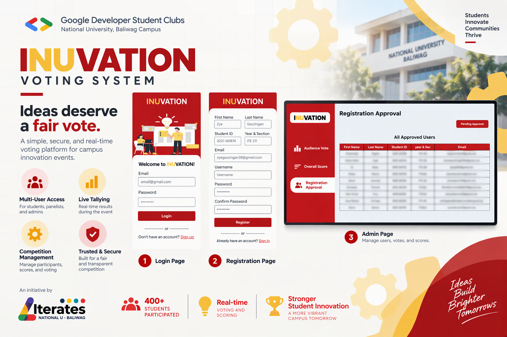
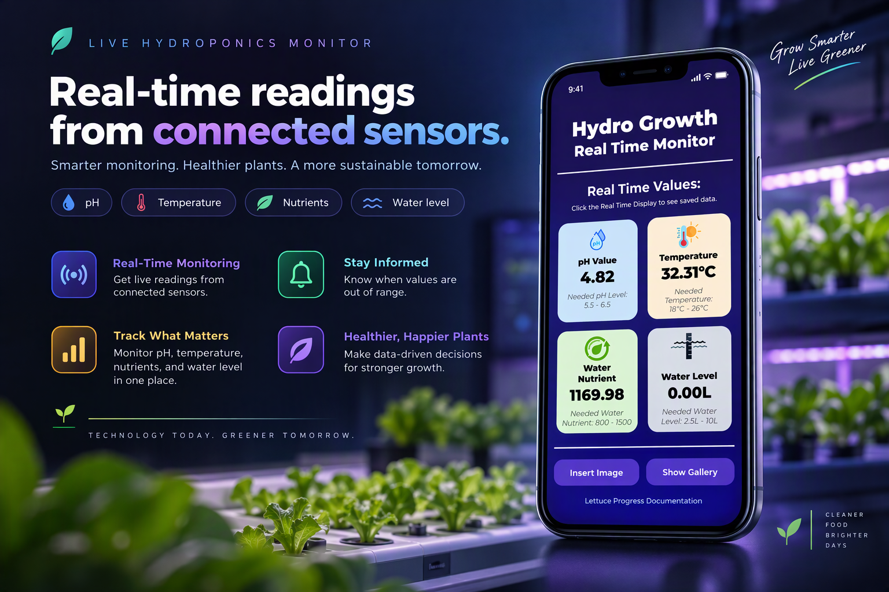
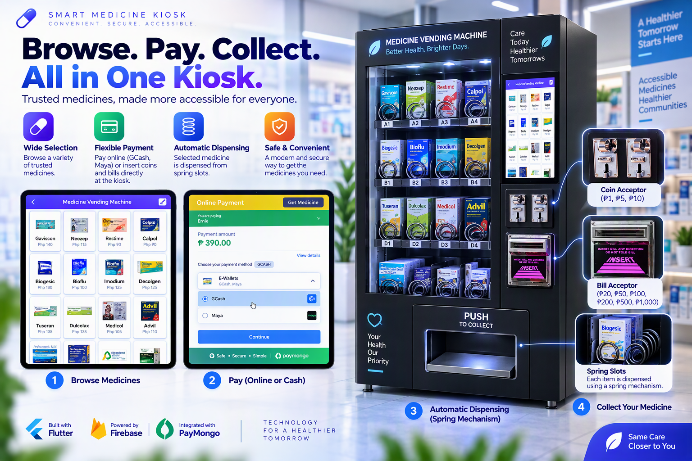
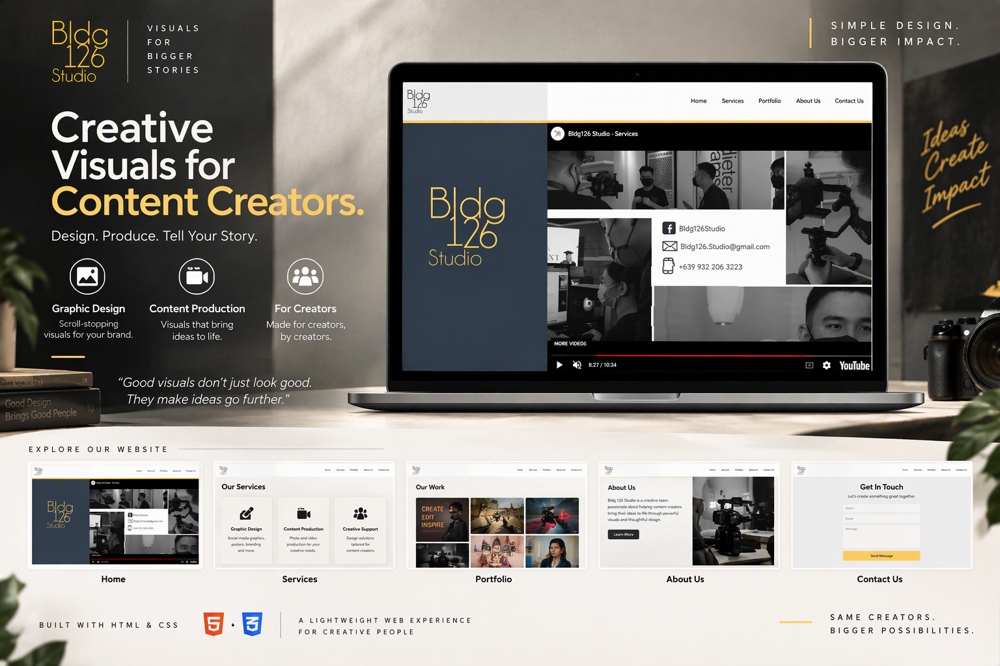
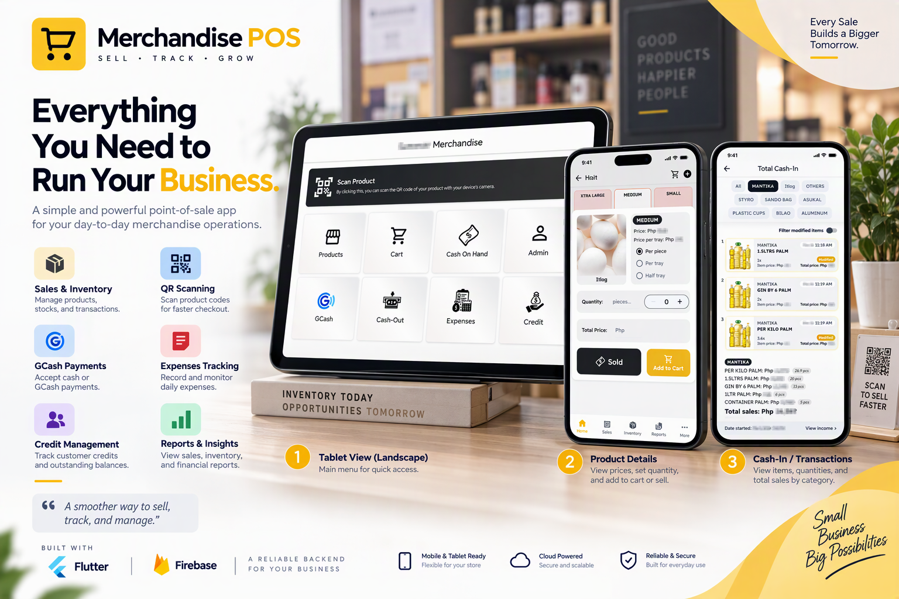
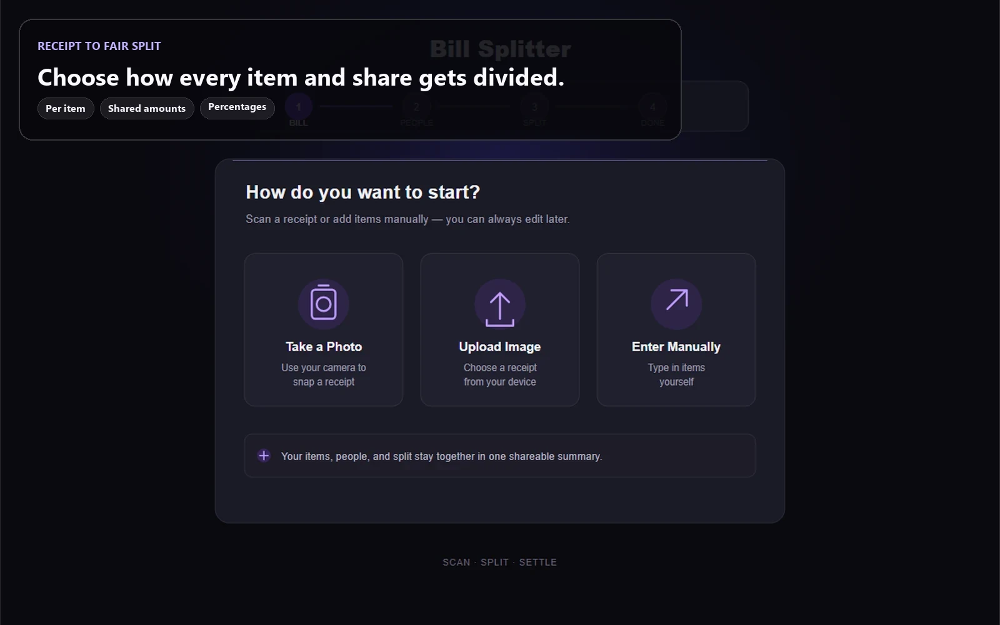
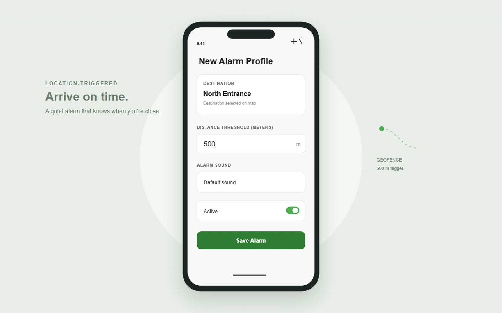
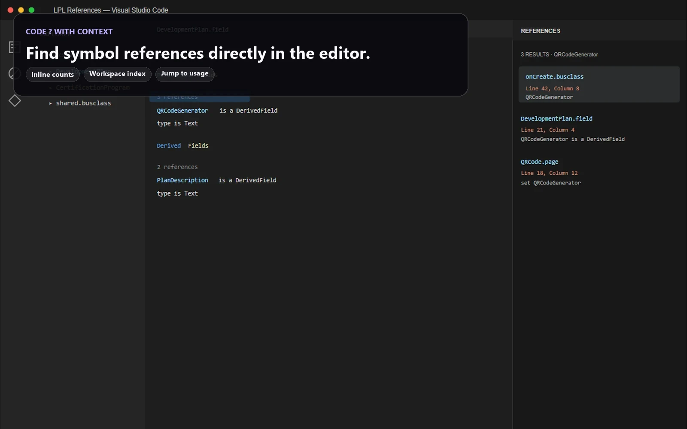
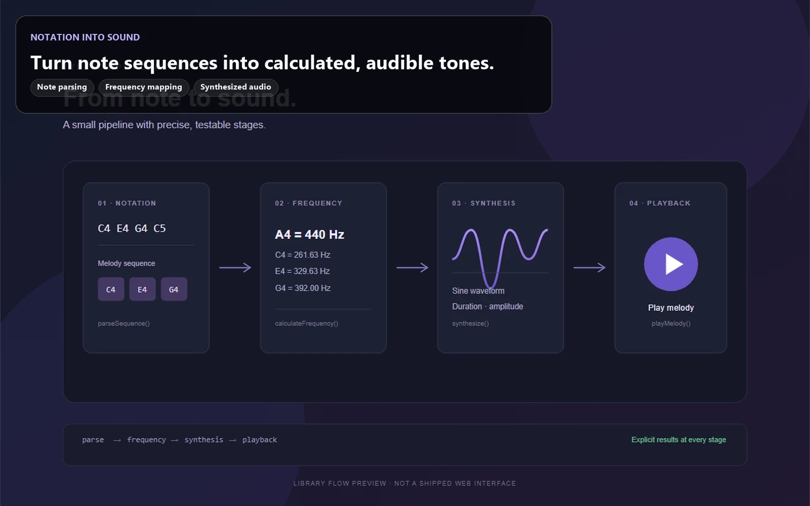
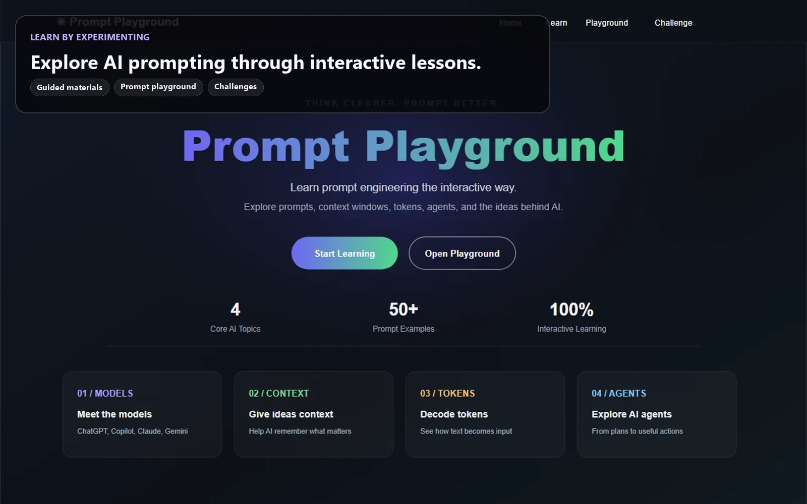

HR Talent (Infor HRT)
Contribute to Infor HR Talent (Infor HRT), an enterprise HCM system, working across Java, Infor Landmark (LPL), and Microsoft SQL Server.
SOFTWARE ENGINEER ASSOCIATE · NOV 2025—PRESENT01 / A FEW THINGS I’VE BUILT
A glimpse into projects across mobile, web, connected hardware, enterprise workflows, and developer tools. Each one started with a question worth answering.
Back to the portfolio02 / PROFESSIONAL EXPERIENCE
Alongside independent projects, I’ve contributed to large-scale HR, public-sector, and banking products.
Contribute to Infor HR Talent (Infor HRT), an enterprise HCM system, working across Java, Infor Landmark (LPL), and Microsoft SQL Server.
SOFTWARE ENGINEER ASSOCIATE · NOV 2025—PRESENTSupported quality engineering for Infor Public Sector (IPS), an enterprise ERP system, by automating more than 50 existing test cases with C#, Selenium, and NUnit.
QA ENGINEER INTERN · JAN—JUN 2025Built mobile banking features using Flutter and FlutterFlow, integrating REST APIs with a PostgreSQL-backed service.
MOBILE ENGINEER · JUN—OCT 202503 / SELECTED PROJECTS
Personal, community, and client work across mobile, web, automation, and connected devices.
 01 / COMMUNITY PLATFORM↗︎
01 / COMMUNITY PLATFORM↗︎
02 / WEB + DESKTOP↗︎
03 / CONNECTED FARMING + IOT↗︎
04 / TABLET KIOSK + IOT↗︎
05 / WEBSITE↗︎
06 / POINT OF SALE↗︎ 07 / LIVE WEB APP↗︎
07 / LIVE WEB APP↗︎
09 / WEB APP↗︎
10 / MOBILE APP↗︎
11 / DEVELOPER TOOL↗︎
12 / AUDIO TOOL↗︎
13 / LEARNING SITE↗︎ 15 / UI AUTOMATION↗︎
15 / UI AUTOMATION↗︎Good things start with a good question.
Let’s talk